응용지질기사 (2005-03-06 기출문제)
1과목: 암석학 및 광물학
1. 같은 종류의 금속원자가 결합하는 경우에 가장 조밀하게 원자가 충진되는 12배위의 격자구조에 속하는 것은?
- As형 격자
- 금강석형격자
- 육방최밀격자
- 등축체심격자
(정답률: 46%)

2. mineralight는 다음 어느 것에 속하는가?
- X 선 발생장치
- 음극선 발생장치
- α선 발생장치
- 자외선 발생장치
(정답률: 46%)
3. 다음 중 두 개 이상의 원소로 구성된 이온은?
- 양이온
- 착이온
- 복수이온
- 합이온
(정답률: 알수없음)
4. 다음에서 사장석(斜長石)의 종류가 아닌 것은?
- 올리고클래이스
- 라브라도라이트
- 바이토우나이트
- 새니딘
(정답률: 39%)
5. 다음 광물 중 경도가 6.0~6.5이며, 비중이 5.0~5.2인 것은?
- 능철석
- 갈철석
- 중정석
- 황철석
(정답률: 37%)
6. 면 (1 1 1)에 정대지수가 [1 1 1]이며 정대축이 수직인 것은 어떤 정계인가?
- 등축정계
- 사방정계
- 삼사정계
- 육방정계
(정답률: 40%)
7. 다음 그림에서 S면의 밀러지수(Miller Index)를 바르게 나타낸 것은?
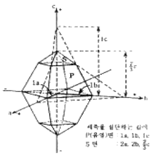
- (3 1 1)
- (2a 2b 2/3c)
- (1 1 3)
- (3 3 1)
(정답률: 알수없음)
8. 다음의 철광석 중 철의 함유량이 가장 많은 것은?
- 적철광
- 자철광
- 갈철광
- 능철광
(정답률: 알수없음)
9. X선의 회절을 이용한 광물감정시에 격자의 대칭과 격자상수를 알 수 있는 방법은?
- 바이젠버그(Weissenberg)방법
- 데바이쉐러(Debye-Scherrer)사진 방법
- 브라그(Bragg)의 회전법
- 부우거-프리세션(Buerger-Precession)방법
(정답률: 80%)
10. 접촉교대작용에서 생기는 skarn 광물은?
- 투휘석(diopside)
- 형석(fluorite)
- 단백석(opal)
- 금홍석(rutile)
(정답률: 50%)
11. 아래의 설명에 해당되는 변성암은?
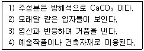
- 석회암
- 편마암
- 대리암
- 사문암
(정답률: 84%)
12. 다음 중 마그마의 결정작용의 진행정도를 나타내는 용어가 아닌 것은?
- 다공질
- 완정질
- 반정질
- 미정질
(정답률: 85%)
13. 북한산에서 채취한 화강암의 암석박편에서 정누대구조(normal zonal structure)를 보여주는 사장석의 결정이 관찰되었다. 이 결정의 중심부에서 연변부로 가면서 함량이 상대적으로 증가하는 원소는?
- Ca
- Fe
- Mg
- Na
(정답률: 74%)
14. 퇴적구조인 사층리(cross - bedding)를 관찰할 수 있는 암석은?
- 사암(sandstone)
- 알로켐(allochem)
- 어란석(oolite)
- 석회암(limestone)
(정답률: 84%)
15. 어란상(魚卵狀)이나 당상(saccharoidal)조직은 다음 어느 암석에서 잘 볼 수 있는가?
- 세일
- 암염
- 석회암
- 석탄
(정답률: 55%)
16. 다음 화산체의 형태 중 주로 현무암질 용암으로 구성되어 있는 것은?
- 복합화산
- 종상화산
- 성층화산
- 용암대지
(정답률: 82%)
17. 알카리장석의 큰 입자내에 설형(楔形) 문자와 같은 형태의 석영들이 연정을 이루고 있는 조직으로 주로 페그마타이트에서 볼 수 있는 특징적인 조직은?
- 서브오피틱 조직(subophitic texture)
- 세리에이트 조직(seriate texture)
- 문상 조직(graphic texture)
- 반상 조직(porphyritic texture)
(정답률: 64%)
18. 다음 중 접촉변성작용에 의하여 형성된 암석은?
- 혼펠스(hornfels)
- 점판암(slate)
- 천매암(phyllite)
- 편마암(gneiss)
(정답률: 73%)
19. 규암(quartzite)은 주로 석영으로 구성된 변성암이다. 다음 중 어느 과정을 거쳐서 이루어졌는가?
- 파쇄작용(cataclasis)
- 화강암화작용(granitization)
- 변성분화작용(metamorphic differentiation)
- 재결정작용(recrystallization)
(정답률: 72%)
20. 다음 그림은 어떤 퇴적암의 광물성분 관계를 나타낸 그림이다. 그림에서 B에 속하는 암석명은?
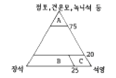
- 셰일
- 석영사암
- 그레이와케(graywacke)
- 아르코스(arkose)
(정답률: 73%)
2과목: 구조지질학
21. 다음 중 정단층에 의해 주로 형성되는 지형은?
- dome-and-basin
- 용식요지(sink hole)
- 지구-지루(graben-horsts)
- 클리페(klippe)
(정답률: 79%)
22. 다음은 단층작용에 의해 형성된 구조이다. 그림에서 단층일 가능성이 가장 큰 것은?
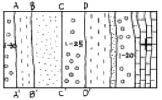
- A - A'
- B - B'
- C - C'
- D - D'
(정답률: 알수없음)
23. 이미 존재하고 있는 엽리가 습곡작용을 받아 형성된 엽리는?
- 파랑엽리(crenulation foliation)
- 치아엽리(stylolitic foliation)
- 망상엽리(anastomosing foliation)
- 조면엽리(rough foliation)
(정답률: 67%)
24. 지층이 수직일 때 지층의 경계선과 등고선과는 어떠한 관계를 나타내는가?
- 등고선과 일치한다.
- 주향방향으로 직선형이다.
- 쌍곡선 형태로 된다.
- 타원형을 한다.
(정답률: 70%)
25. 다음 중 연성변형(ductile deformation)작용을 받았을 때 형성되는 것은?
- 부정합
- 습곡
- 산사태
- 포행
(정답률: 84%)
26. 지진이 발생하고 나서 10초후에 P파가 도착하였으며, 그 7초후에 S파가 도착하였다. P파 속도는 S파 속도의 몇 배인가?
- 0.7배
- 1.2배
- 1.5배
- 1.7배
(정답률: 70%)
27. 다음은 충상단층작용(thrust faulting)에 의해 형성된 현상이다. 그림에서 화살표(綎)는 무엇인가?
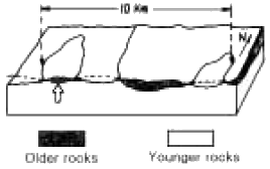
- Fenster
- Window
- Klippe
- Graben
(정답률: 알수없음)
28. 대륙지각의 분류라 할 수 없는 것은?
- 순상지(shield)
- 대지(platform)
- 오피(ophiolite)
- 현생누대 조산대
(정답률: 알수없음)
29. 하도의 폭이 30m, 평균수심이 3m이고 평균유속이 2m/s이다. 이 하천의 유량은 얼마인가?
- 180 m3/s
- 45 m3/s
- 20 m3/s
- 5 m3/s
(정답률: 알수없음)
30. 다음 중 선구조(lineation)가 아닌 것은?
- 단층조선
- 엽리(Foliation)
- 부딘구조(Boudinage)
- 멀리온구조(mullion)
(정답률: 47%)
31. 지각 및 상부 맨틀을 포함하고 있으며, 주로 탄성변형이 일어나는 곳은?
- 연약권
- 맨틀
- 암석권
- 지각
(정답률: 알수없음)
32. 다음 중 평형상태에서 두 개의 서로 직교하는 면에 작용하는 stress tensor components를 바르게 나타낸 것은? (단, 2차원 평면상태이다.)
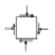
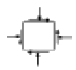
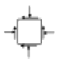
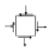
(정답률: 69%)
33. 다음 지질구조에서 수평방향의 인장응력(tensile stress)에 의해 형성된 구조는?
- 정단층
- 역단층
- 스러스트
- 돔구조
(정답률: 75%)
34. 다음의 지질단면은 무엇을 나타낸 것인가?
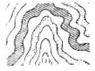
- 복향사
- 복배사
- 동형습곡
- 배심습곡
(정답률: 알수없음)
35. 다음 중 천발지진과 마그마 분출이 주로 일어나는 곳은?
- 베니오프대
- 해구부근
- 해령부근
- 신기조산대
(정답률: 64%)
36. 인장응력이 작용하는 판의 경계부는?
- 발산경계
- 수렴경계
- 변환단층경계
- 충돌경계
(정답률: 70%)
37. 압쇄암대(mylonite zone)의 설명이 아닌 것은?
- fine - grained
- strongly layered appearence
- 큰 shear strain으로 생성된다.
- 퇴적구조가 잘 보존되어 있다.
(정답률: 77%)
38. 침식윤회에서 노년기 이후 최종적으로 형성되는 평탄한 침식 면을 무엇이라 하는가?
- 구릉
- 단애
- 준평원
- 완평원
(정답률: 알수없음)
39. 다음 설명에 해당하는 판경계부는?
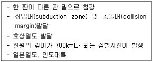
- 발산형 경계(divergent margins)
- 수렴형 경계(convergent margins)
- 변환단층 경계(transform fault margins)
- 대륙 경계(continental margin)
(정답률: 알수없음)
40. 풍성지형 중 여러 방향에서 불어오는 바람에 의해서 발달하는 모래언덕(sand dune)의 형태는?
- Barchan dune
- Star dune
- Parabolic dune
- Transverse dune
(정답률: 73%)
3과목: 탐사공학
41. 화학원소의 1차분산에 의한 이상대를 찾기 위한 지구화학탐사의 대상시료는?
- 토양
- 암석
- 식물
- 지하수
(정답률: 46%)
42. 다음 그림은 전자탐사에 있어서 1차장(
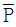
)과 2차장(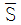
)및 합성장(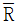
)을 나타낸 것이다. 위상각이 α, 1차장과 2차장 사이의 각이 β일 때 다음 설명 중 틀린 것은?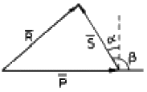
- 좋은 전도성 광체는 α가 90°에 가깝고 나쁜 전도체는 α가 0에 가깝다.
- 좋은 전도체는 동상성분이 크나 나쁜 전도체는 동상성분이 0에 가깝다.
- 좋은 전도체는 이상(離相)성분이 크나 나쁜 전도체는 이상성분이 0에 가깝다.
- 나쁜 전도체는 이상성분이 동상성분보다 약간 크게 나타난다.
(정답률: 알수없음)
43. 0℃, 760 mmHg의 공기 중에서 1 cm3당 단위 정전하를 띠도록 하는 방사선을 의미하는 단위는?
- 렌트겐
- 큐리
- 암페어
- 패러데이
(정답률: 70%)
44. 육상에서 측정한 중력자료의 해석에 앞서 필요한 보정이 아닌 것은?
- 속도(Velocity)보정
- 부게(Bouguer)보정
- 위도(Latitude)보정
- 조석(Tidal)보정
(정답률: 77%)
45. 해상 중력탐사시 중력보정은 주로 어디를 기준으로 하는가?
- 해저면
- 선저면(船底面)
- 평균해수면
- 선갑판(船甲板)
(정답률: 75%)
46. 다음 중 공심점 기법(CDP;Common Depth Point method)에 대한 바른 설명은?
- 발파점-수진점 간격을 달리하여 동일한 반사점으로 부터 여러 개의 트레이스를 기록하는 것이다.
- 수진점에 기록된 반사파 기록을 굴절파 기록으로 바꾸는 것이다.
- 지층의 두께를 동일하다고 가정하는 해석기법이다.
- 주로 육상 탄성파 탐사에서 사용되며 해상에서는 적용할 수 없다.
(정답률: 알수없음)
47. 과도 전자장(transient EM field)을 이용하는 전자탐사에서 광체내 와전류(渦電流)에 의한 2차 자장은 시간에 따라 어떻게 되는가?
- 광체의 전기전도도가 높을수록 서서히 감쇠한다.
- 광체의 전기전도도가 높을수록 서서히 증가한다.
- 광체의 전기전도도가 높을 때 서서히 증가한 후 갑자기 감쇠한다.
- 광체의 전기전도도가 높을 때 서서히 감쇠한 후 갑자기 증가하고 다시 감쇠한다.
(정답률: 16%)
48. 자연 잔류 자기와 현재의 자기장에 의한 유도 자기와의 비를 무엇이라고 하나?
- E℧tv℧s 비
- K℧nigsberger 비
- Moho 비
- 포아송(Poisson) 비
(정답률: 알수없음)
49. 방사능탐사에 사용되는 기기는 다음 중 어느 것인가?
- spectrometer
- geophone
- voltmeter
- dipmeter
(정답률: 알수없음)
50. 다음 중 현장에서 지하수 시료의 채취방법으로 옳지 않은 것은 어느 것인가?
- 시료병은 시료채취 지점의 지하수로 세척한 후 뚜껑부분까지 채워서 채취한다.
- 미량원소의 화학분석을 위한 시료는 필터를 사용하여 거른 후 pH가 2 정도 되도록 한다.
- 펌프가 설치된 관정에서는 펌프를 작동시킨 후 바로 시료를 채취해야 한다.
- 수온, 전기전도도, pH 등은 현장에서 직접 측정하는 것이 좋다.
(정답률: 73%)
51. 수평 2층 지하구조에서 상층의 밀도와 탄성파 속도가 2g/㎝3, 1,500m/sec이고, 하층의 밀도와 탄성파 속도가 2.7g/㎝3, 4,000m/sec일 때 탄성파 반사계수는?
- 1.5652
- √1.5652
- 0.5652
- √0.5652
(정답률: 34%)
52. 전기비저항탐사에서 겉보기 비저항(apparent resistivity)에 대한 설명으로 올바른 것은?
- 겉보기 비저항은 개념이므로 단위가 없다.
- 겉보기 비저항은 지하 매질의 참 비저항과는 아무런 관계가 없다.
- 겉보기 비저항은 지하 매질이 균질할 경우 참 비저항과 같다.
- 겉보기 비저항은 전극배열방법에 관계없이 같은 값을 보인다.
(정답률: 58%)
53. 지자장(地磁場)의 5요소란 무엇인가?
- 전자력, 투자율, 편각, 대자율, 복각
- 전자력, 수평분력, 수직분력, 편각, 복각
- 투자율, 대자율, 자기자오선, 편각, 수직분력
- 수평분력, 자기능률, 대자율, 수직분력, 편각
(정답률: 알수없음)
54. 다음 주시곡선으로부터 시간절편을 이용하여 상부지층의 두께를 구했을 때 가장 근사한 값은 어느 것인가?
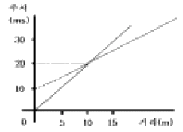
- 0.3m
- 3m
- 30m
- 300m
(정답률: 알수없음)
55. 다음 중 일반적인 지자기의 일 변화량은 어느 정도인가?
- 0.1 ∼ 0.3감마
- 1.0 ∼ 3.0감마
- 10 ∼ 30감마
- 100 ∼ 300감마
(정답률: 50%)
56. 자연발생적인 공중방전(예: 번개)을 송신원으로 이용하여 1∼1000Hz 주파수대역에서 경사각을 측정하는 전자파탐사 방법은 다음 중 어느 것인가?
- MT(Magnetotelluric)법
- LOTEM(Long Offset TEM)법
- AFMAG(Audio Frequency Magnetic)법
- CSAMT(Controlled Source AMT)법
(정답률: 34%)
57. VLF - EM탐사의 단점에 대한 설명으로 잘못된 것은?
- 지형의 영향을 많이 받는다.
- 이상체의 전기전도도나 심도에 대한 정량적 해석이 힘들다.
- 가탐심도가 얕다.
- 탐사를 위한 별도의 인공적인 송신원이 필요하다.
(정답률: 47%)
58. 굴절법 탐사방법이 개발된 초기에 유전 지역에서 심도가 얕은 암염돔(salt dome)을 조사하는데 매우 유용하게 사용되었으며, 짧은 시간 내에 비교적 광범위한 지역을 손쉽게 조사할 수 있기 때문에 새로운 지역에 대한 예비 탐사에도 효과적으로 이용되는 탐사 방법은?
- 팬터밍(phantoming)
- 인라인(in-line) 탐사법
- 측선발파법(profile shooting)
- 선형발파법(fan-shooting)
(정답률: 알수없음)
59. 탄성파에 대한 설명으로 틀린 것은?
- 탄성파는 실체파(body wave)와 표면파(surface wave)로 구분할 수 있다.
- P파는 파의 진행방향이 입자의 운동방향과 수직하다.
- 레일리파(Rayleigh wave)는 표면파로서 그 속도는 S파의 0.9배정도이며, 입자의 운동은 파의 진행방향에 반대방향으로 일어나는 역행운동을 한다.
- S파는 실체파로서 횡파 또는 전단파로 부르며, 그 운동 성분에 따라서 SV파와 SH파로 나눌 수 있다.
(정답률: 알수없음)
60. 외부에서 자기장이 가해지면 외부 자기장의 방향과 유사한 자화방향을 가진 자구는 면적이 커지고, 그렇지 않은 자구는 면적이 좁아지는 특성을 보이는 자성체는?
- 강자성체
- 상자성체
- 반자성체
- 페리자성체
(정답률: 67%)
4과목: 지질공학
61. 주향 N30°E, 경사 50°SE인 절리의 방향을 경사/경사방향으로 올바르게 표시한 것은?
- 50°/ 120°
- 50°/ 30°
- 50°/ 300°
- 30°/ 50°
(정답률: 93%)
62. 어떤 암석시료는 시간에 따른 거동이 달라지는 creep현상을 보여 실험에 있어서도 시간에 따른 계속적인 관찰이 필요하다. 다음 중 creep현상을 가장 잘 보이는 암석은?
- 사암
- 암염
- 섬록암
- 유문암
(정답률: 알수없음)
63. 터널공사시 암반조건에 대한 공학적 성질을 제시해주는 값으로 아래와 같은 Q값을 사용한다. 아래식에서(Jw/SRF)는 암반의 어떤 성질을 반영해 주는가?
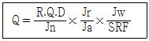
- 풍화의 발달상태
- 암괴크기
- 전단강도
- 유효응력
(정답률: 알수없음)
64. 장석이 풍화되어 생성된 점토광물이 비가 많이 내리는 열대 지방에서 다시 가수분해되어 생성되는 광물은 다음 중 어느 것인가?
- 고령토
- 석고
- 보옥사이트
- 방해석
(정답률: 46%)
65. 다음 중 충적층 또는 홍적층에서 공극율이 가장 큰 지층은?
- 모래, 자갈층
- 모래층
- 점토층
- 자갈층
(정답률: 알수없음)
66. 가이벤 헤르쯔버그(Ghyben - Herzberg)법칙에 의하면 대양(大洋)의 섬이나 해안사구(砂丘)에서 담수와 해수의 비중 차이로 인해서 다음 그림과 같이 담수가 해수위에 렌즈(Lens)상으로 떠있게 된다. 이때 H와 h의 관계를 바르게 나타낸 것은? (단, 담수와 해수의 비중은 각각 1.0과 1.025이다.)
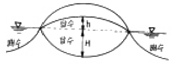
- H = 10h
- H = 20h
- H = 30h
- H = 40h
(정답률: 47%)
67. 불투수성 지반위의 자유면 대수층에 우물을 파고 우물의 중심으로부터 5m, 30m 되는곳에 관측정을 설치하고, 우물에서 1,140m3/일을 양수하기 시작한 후 6시간후에 정상상태에 도달하여 그림과 같은 수위 관측치를 얻었다. 대수층의 투수계수는 얼마인가?
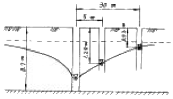
- 37.82m/일
- 51.66m/일
- 118.84m/일
- 278.64m/일
(정답률: 50%)
68. 불연속면의 주향방향이 터널진행방향과 평행하고 경사가 70°이다. 이 불연속면의 방향성이 터널의 굴진에 미치는 영향으로 맞는 것은?
- 매우 불리
- 불리
- 보통
- 유리
(정답률: 50%)
69. 사면의 안정에서 전단응력을 증가시키는 요인 중 외적요인과 거리가 먼 것은 ?
- 굴착에 의한 흙의 제거
- 고결제의 결합력 둔화
- 지진, 발파에 의한 충격
- 균열내 작용하는 수압
(정답률: 43%)
70. 다음의 연약지반 개량공법 중 지하수위를 저하시킬 목적으로 사용되는 공법은?
- sand drain 공법
- pre-loading 공법
- paper drain 공법
- well-point 공법
(정답률: 65%)
71. 레이놀드지수(Reynolds Number)에 대한 설명으로 틀린 것은?
- 유체의 점착력에 대한 관성의 비이다.
- 침투수의 자유수면을 대표하는 선이다.
- 층류와 난류와의 구분에 대한 기준이다.
- 일반적으로 모든 지하수의 레이놀드지수는 1~10 이내 이다.
(정답률: 64%)
72. 스캔라인(Scan-line) 조사기법에 대한 바른 설명은?
- 일정한 면적부분에 나타난 불연속면을 조사한다.
- 조사선을 따라 나타난 불연속면을 조사한다.
- 시간이 많이 걸리나 가장 정확하다.
- 분석시 항공사진이 필요하다.
(정답률: 알수없음)
73. 암석의 풍화작용 중 화학적 작용에 해당하는 것은?
- 산화작용
- 팽창 수축 작용
- 결정의 작용
- 식물의 뿌리작용
(정답률: 93%)
74. 불연속면의 전단강도 특징 중 잘못 설명된 것은?
- 불연속면에 지하수가 침투하면 전단강도는 감소한다.
- 불연속면의 전단강도는 불연속면내의 충전물 두께와는 무관하다.
- 동일한 거칠기에서 불연속면내에 연약한 충전물이 존재하면 전단강도는 감소한다.
- 불연속면의 거칠기가 거칠수록 전단강도는 증가한다.
(정답률: 75%)
75. 어떤 지층의 투수계수가 500m/일 이고, 동수구배가 1/1,000, 공극비가 0.25일 때, 이 지층내의 지하수 평균 유속은 얼마인가?
- 0.125m/일
- 0.5m/일
- 2.0m/일
- 2.5m/일
(정답률: 알수없음)
76. 해상시추에서 실트층 불교란 시료를 채취 할때 가장 적합한 시료채취 샘플러는?
- 코아바렐(Core Barrel)
- 가스작동 피스톤(Gas operated piston) 샘플러
- 전단핀 피스톤(shear-pin piston) 샘플러
- 자유낙하 중력튜브(Free-fall gravity tube)
(정답률: 59%)
77. RMR에 의한 암반평가에서 가장 배점이 많은 요소는?
- 압축강도
- RQD
- 지하수상태
- 불연속면의 상태
(정답률: 34%)
78. 다음 지반개량공법 중 화학적 개량공법이 아닌 것은?
- 페이퍼드레인공법
- 생석회말뚝공법
- 심층혼합공법
- 약액주입공법
(정답률: 알수없음)
79. 최근 선진국을 비롯하여 국내에서도 지반조사시 위치확인을 위해 고전적인 측량장비 대신 사용되는 것으로, 위성으로부터 자료를 받아 자기 위치를 파악해내는 장치는?
- SPT
- GPS
- GIS
- CBR
(정답률: 79%)
80. 다음 설명 중 틀린 것은?
- 현지암반의 투수계수는 무결암의 투수계수보다 크다.
- 현지암반의 투수계수는 보통 이방성을 나타낸다.
- 일반적으로 심도가 증가할수록 현지암반의 투수계수는 감소한다.
- 층리면에 수직한 방향의 투수계수는 수평한 방향의 투수계수보다 크다.
(정답률: 알수없음)
5과목: 광상학
81. 다음은 우리나라 금광상에 대한 설명이다. 옳은 설명은?
- 우리나라에는 사금광상이 없다.
- 중생대 화강암류와 성인적인 관련성이 크다.
- 에렉트럼은 우리나라에서는 산출되지 않는 금-은 광물이다.
- 우리나라 금광상에서는 모암의 변질이 일어나지 않는다.
(정답률: 48%)
82. 니켈, 크롬광상은 다음 중 주로 어느 것에 속하는가?
- 정마그마성광상
- 페그마타이트광상
- 기성광상
- 접촉광상
(정답률: 56%)
83. 우리나라에서 우라늄을 가장 많이 함유하고 있는 지층은?
- 옥천계 탄질 점판암층
- 평안계 탄질 셰일층
- 대동계 탄질 셰일층
- 경상계 탄질 셰일층
(정답률: 알수없음)
84. 고령토 광상에 대하여 설명한 것 중 틀린 것은?
- 고령토의 화학식은 K2O Al2O3 6SiO2 이다.
- 우리나라에는 경상남도에 많이 분포한다.
- 가장 중요한 용도는 요업 원료이다.
- 고령토의 품질은 백색도(whiteness)와 내화도(SK)를 주로 본다.
(정답률: 28%)
85. 다음 중 주로 정출작용에 의하여 형성되는 광상은?
- 풍화잔류광상
- 접촉교대광상
- 침전광상
- 정마그마광상
(정답률: 알수없음)
86. 남아프리카의 부슈벨드 화성복합체(Bushveld Igneous Complex)에서 가장 많이 산출되는 원소는?
- 니켈
- 크롬
- 금
- 구리
(정답률: 알수없음)
87. 한 개의 큰 광물속에 작은 다른 종류의 결정들이 불규칙하게 많이 들어있는 조직은?
- 반상석리(porphyritic texture)
- 문상석리(graphic texture)
- 포이킬리틱석리(poikilitic texture)
- 어란상석리(o梗litic texture)
(정답률: 알수없음)
88. 우리나라 선캠브리아 이언의 광화작용에 대한 설명은?
- 열수 광화작용이 활발히 진행되었다.
- 마그마 분화광상으로 양양광상 등이 있다.
- 석탄 자원의 대부분이 이 시기의 지층에 부존한다.
- 국내 대규모 스카른 광상의 형성이 이루어진 시기이다.
(정답률: 19%)
89. 광물결정중의 유체 포유물을 이용하여 얻을 수 있는 자료는?
- 점성도
- 광상생성온도
- 이온크기
- 확산온도
(정답률: 70%)
90. 광상에서 광물생성의 시간적 순서를 의미하는 용어는?
- 광물공생관계
- 광물대상분포
- 광물상관계
- 표준광물조합
(정답률: 62%)
91. 우리나라 불국사 화강암의 관입 시기는?
- 백악기
- 쥬라기
- 트라이아스기
- 석탄기
(정답률: 59%)
92. 우리나라의 지하자원 중 신생대 암석 내에서 주로 산출되는 광석은?
- 납석
- 무연탄
- 석회석
- 벤토나이트
(정답률: 62%)
93. Bowen의 불연속 반응계열은? (단, 고온 →저온)
- 감람석 →휘석 →각섬석 →흑운모 →석영
- 감람석 →각섬석 →휘석 →흑운모 →석영
- 감람석 →회장석 →휘석 →흑운모 →석영
- 감람석 →사장석 →휘석 →흑운모 →석영
(정답률: 75%)
94. 우리나라 맥상 금속광화작용과 가장 밀접한 관계를 갖는 광상 생성기는?
- 선캠브리아기
- 고생대
- 중생대
- 신생대
(정답률: 87%)
95. 스카른(Skarn) 광물에 속하는 것은?
- 방해석, 중정석
- 정장석, 사장석
- 석류석, 규회석
- 흑운모, 감람석
(정답률: 알수없음)
96. 기원에 관계없이 지하에 존재하는 모든 뜨거운 액상의 유체를 의미하는 것은?
- 공극수
- 변성수
- 열수
- 순환수
(정답률: 알수없음)
97. 열수광상의 모암 변질이 아닌 것은?
- 녹니석화작용(Chloritization)
- 견운모화작용(Sericitization)
- 명반석화작용(Alunitization)
- 전기석화작용(Tourmalinization)
(정답률: 50%)
98. 다음은 우리나라 철광상이 밀집 분포하는 지역이다. 틀린 것은?
- 경남 고성지구
- 강원도 홍천지구
- 강원도 양양-영월지구
- 충북 충주지구
(정답률: 알수없음)
99. 다음 설명 중 틀린 것은?
- 광상의 가치를 결정하는 요인은 품위와 매장량이다.
- 광석이 광산물로서 상품 가치의 기준이 되는 척도를 품위라고 한다.
- 지하에 광석이 채굴할 정도로 농집된 장소를 광상이라고 한다.
- 광석 내에 들어있는 맥석광물을 분리하는 작업을 정광이라고 한다.
(정답률: 70%)
100. 상동 중석광상에 관련된 설명 중 틀린 것은?
- 이 광상은 전형적인 스카른 광상에 속한다.
- 이 광상의 관계화성암은 백악기 화강암이다.
- 주 광체는 풍촌석회암과 묘봉슬레이층 내에 배태된다.
- 이 광상에서 광석을 함유하는 석영맥은 산출되지 않는다.
(정답률: 알수없음)